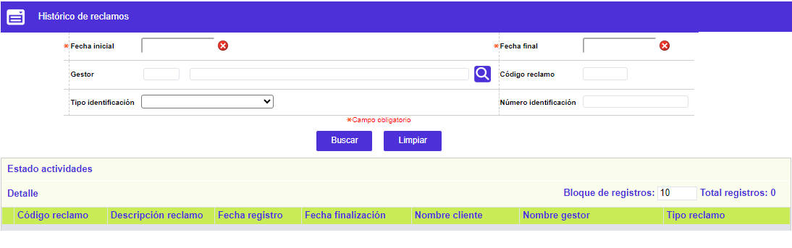
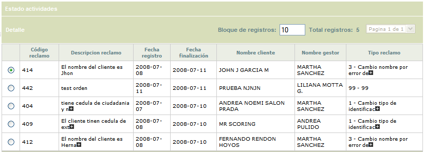
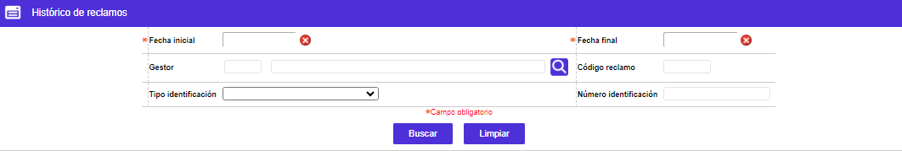
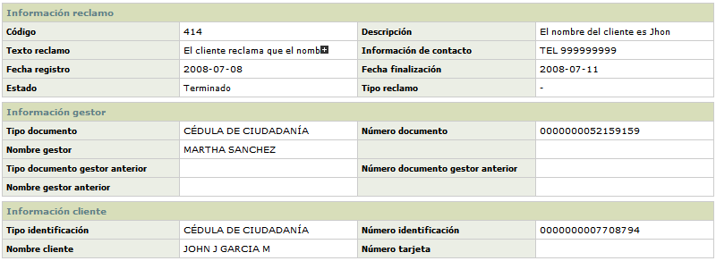

Histórico de Reclamos
Mediante este formulario se posibilita el consultar los diferentes reclamos cuyo estado sea Terminado, bien sea que sus actividades hayan sido canceladas o terminadas. Para poder visualizar dichos registros en esta opción, el usuario debe haber ejecutado el proceso que los elimina de las opciones Atención de reclamos y Maestro de reclamos, y los pasa a esta opción. Dicho proceso se podrá ejecutar para el mes actual o para cualquier mes anterior en el sistema.
El formulario dispone de los enlaces Detalle y Estado actividades. Adicionalmente, cuenta con un filtro de búsqueda.


Filtro: Se pueden realizar consultas a través de los siguientes criterios:

| Fecha inicial | Campo obligatorio que, mediante la funcionalidad de un calendario, debe indicarse la fecha inicial o a partir de la cual se debió haber radicado el reclamo que se desea consultar en la base de datos. |
| Fecha final | Campo obligatorio que, mediante la funcionalidad de un calendario, permite indicar la fecha final o hasta la cual se debió haber radicado el reclamo que se desea consultar en la base de datos. |
Gestor |
Campo que dispone de una lista de valores adjunta, de la que puede seleccionarse el gestor para el cual se desean consultar los reclamos asignados o a su cargo. |
| Código reclamo | Campo numérico de 4 dígitos, en el que puede digitarse el código del reclamo que se desea consultar, el cual fue asignado automáticamente por el sistema. |
| Tipo de identificación | Campo que dispone de una lista de valores tipo combo, de la cual se puede seleccionar el tipo de documento asociado al tarjetahabiente al cual corresponde el reclamo que se desea consultar en la base de datos. |
| Número de identificación | Campo numérico de 20 posiciones, en el que puede ingresarse el número de identificación del cliente asociado con el reclamo que se quiere consultar. |
Detalle: Si el usuario invoca la opción Detalle se despliega el siguiente formulario el cual contendrá la información detallada del reclamo y su trámite.
